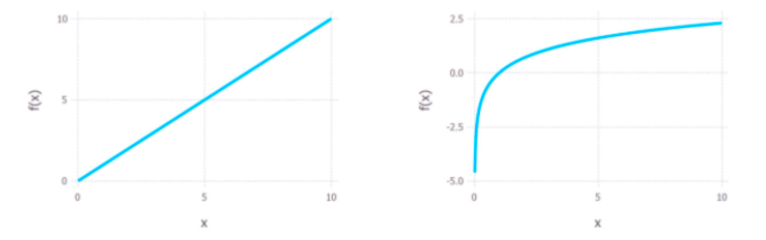

极大似然函数取对数的原因
1 减少计算量
在计算一个独立同分布数据集的联合概率时，如：
其联合概率是每个数据点概率的连乘：
两边取对数则可以将连乘化为连加：

乘法变成加法，从而减少了计算量；
同时，如果概率中含有指数项，如高斯分布，能把指数项也化为求和形式，进一步减少计算量；
另外，在对联合概率求导时，和的形式会比积的形式更方便。
2. 利于结果更好的计算
但其实可能更重要的一点是，因为概率值都在[0,1]之间，因此，概率的连乘将会变成一个很小的值，可能会引起浮点数下溢，尤其是当数据集很大的时候，联合概率会趋向于0，非常不利于之后的计算。
3. 取对数并不影响最后结果的单调性
因为相同的单调性，它确保了概率的最大对数值出现在与原始概率函数相同的点上。因此，可以用更简单的对数似然来代替原来的似然。
